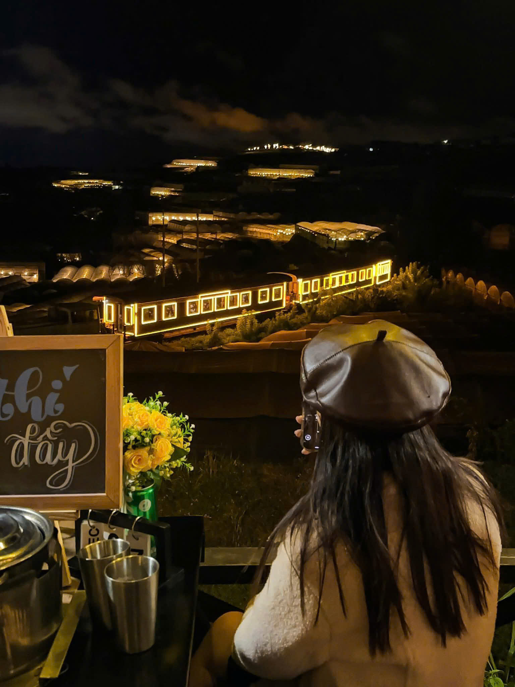

Hải sản ở Đà Lạt có tươi không?
Câu hỏi nhiều người thắc mắc: Đà Lạt ở trên núi, hải sản Đà Lạt có tươi không? Câu trả lời là CÓ! Nhờ hệ thống vận chuyển lạnh hiện đại, hải sản từ Phan Thiết, Nha Trang, Phan Rang được đưa lên Đà Lạt chỉ trong 3-4 tiếng — vẫn còn tươi roi rói. Nhiều quán nhập hải sản mỗi ngày, đảm bảo chất lượng.
1. Trạm Dừng Chill — Set nướng hải sản view triệu đô
Trạm Dừng Chill có set nướng hải sản Đà Lạt gồm tôm sú, mực ống, sò điệp, nghêu nướng mỡ hành — tất cả nướng trên bếp than hoa ngay tại bàn. Vừa nướng vừa ngắm hoàng hôn và biển sao nhà lồng. Giá set hải sản từ 200K/người.
Món hot: Tôm sú nướng muối ớt, mực nướng sa tế, sò điệp nướng phô mai

2. Quán Hải Sản Nguyễn Chí Thanh
Chuyên hải sản nướng: mực, tôm, cua, sò. Hải sản nhập hàng ngày từ Nha Trang, bể chứa sống tại quán. Giá 200-350K/2 người, cách chợ đêm 500m.
3. Nướng Hải Sản Biển Xanh
Quán nướng hải sản quy mô lớn, có bể hải sản sống cho khách chọn. Menu đa dạng từ ốc, cua, cá đến bạch tuộc. Set nướng cho nhóm 4 người từ 500K.

4. BBQ Hải Sản Sân Vườn
Nướng hải sản kiểu sân vườn, giữa vườn hoa Đà Lạt. Không gian lãng mạn, phù hợp couple. Giá trung bình 250K/người.
5. Quán Ốc & Hải Sản Bùi Thị Xuân
Phong cách bình dân, đồ ăn tươi ngon, giá hợp lý. Nổi tiếng với ốc xào, nghêu nướng mỡ hành, chả mực chiên. Giá 150-200K/2 người, mở đến khuya.
Kết luận
Nướng hải sản Đà Lạt hoàn toàn xứng đáng để thử — đồ tươi, giá tốt, không gian mát mẻ. Muốn kết hợp hải sản nướng + view đẹp nhất? Đặt bàn tại Trạm Dừng Chill để vừa ăn hải sản vừa ngắm biển sao!